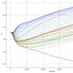

OpenAI首席科学家公开预训练指标，提议业界共设上限
5 条帖子，合计浏览 36.6 万次
OpenAI 首席科学家 Jakub Pachocki 22日发表文章《Perplexity and Intelligence》，公开了 OpenAI 各代模型的“困惑度”（衡量模型预测下一个词准不准的指标，越低越好），并提议各家 AI 公司约定一条共同的开发上限。他认为 AI 最早2027年可能让预训练研究大幅加速，安全监控恐怕跟不上。X 上几条转述帖把它概括为“呼吁限制 AI 开发”，浏览量合计超过30万。
- 公开数字
- OpenAI 首次公开各代模型在内部数据集上的对数困惑度：GPT-3.5 约0.99，GPT-4 约0.91，最新模型已经低于0.8。文章说，降到0.8以下后，模型在网络安全和数学领域出现了颠覆性的能力。 OpenAI官方
- 数学突破
- 文章说，模型升级到约0.76后，开始在数学开放问题上接连给出突破性结果。Pachocki 据此推测，最早2027年，预训练研究也可能出现类似的“雪崩式”进展。 OpenAI官方
- 提议内容
- 他提议各家前沿 AI 公司用困惑度等指标约定共同上限，在理解和监控 AI 行为的能力达到具体里程碑之前都不越过。他举的里程碑例子，是做出能接替“思维链监控”（读模型的推理过程来发现问题）的新方法。 OpenAI官方
- 担忧
- 他预计模型进入0.68至0.7区间时会出现新的颠覆性能力，但还不知道会是什么。他认为对齐和监控研究的进展可能赶不上预训练的加速，现有的对齐审查方法还会继续失效。 OpenAI官方
- 反响
- OpenAI CEO Sam Altman 表态支持这项提议。 Analytics Insight
补充来源：Perplexity and Intelligence、OpenAI Scientist Proposes Common Limits
按文章里的图表转述，OpenAI 一个未发布的内部模型数值已经低于 GPT-6.2 Astra，OpenAI 还说 AI 已经参与设计最新的模型。
 Chubby
Chubby认为困惑度到了超大规模仍然有信息量，说明模型架构研究依然有价值。
Xiaoyu Wu把这篇文章概括为 OpenAI 首席科学家呼吁限制 AI 开发。
 Watcher Guru
Watcher Guru
首里城正殿烧毁7年后复原完工，23日起开放
1 条帖子，合计浏览 178 万次
冲绳那霸市的首里城（琉球王国的王宫，被视为“冲绳的象征”）正殿2019年在火灾中烧毁，22日国家主办的复原完成仪式举行，正殿时隔7年重新亮相。Yahoo新闻把完成仪式放进推荐话题，帖子获得2.4万个赞、约178万次浏览。正殿内部23日正午起向公众开放，参观要预约，门票也从这天起上涨。
- 参观方式
- 正殿内部23日正午起开放，要提前预约日期和时段。11月23日至12月6日不接受团体预约。 读卖新闻、mediadogs
- 门票
- 从23日入场起，成人门票从400日元涨到1000日元，理由是加强了防灾防火，运营经费也增加了。70岁以上的冲绳县民和持残障手册的人免费。 mediadogs
- 复原细节
- 正殿是木造三层建筑，红色涂料按古文献的线索，用冲绳本岛北部采集的天然颜料调成。颜色比1992年那次复原更深沉。 读卖新闻
- 防火
- 这次新装了喷水灭火装置和火焰探测器，向消防报警也改成了自动。 每日新闻
- 来历
- 首里城在二战末期的冲绳战役中被毁，1992年复原了正殿等建筑。2019年10月31日凌晨的火灾烧毁了正殿等建筑，起火原因最可能是正殿的电气系统，至今没有确定。 每日新闻、福岛放送
补充来源：火災で焼失した“首里城正殿”再建工事が完了し完成式典（読売新聞）、首里城正殿の復元完成で式典、テープカット 23日正午から一般公開、首里城の復元工事が完了 正殿内部、深みある朱色の空間
SpaceX同一发射台32小时内两度发射，创纪录
5 条帖子，合计浏览 247 万次
SpaceX 日本时间22日晚9点20分前后，用 Falcon 9 火箭从加州范登堡太空军基地的4E号发射台，为美国国家侦察局（负责间谍卫星的情报机构）发射了 NROL-136 任务。这次离同一发射台上一次发射只隔约32小时，是 SpaceX 同一发射台两次发射间隔最短的纪录。SpaceX 的直播帖和 Elon Musk（SpaceX CEO）的称赞帖合计获得3万多个赞。
- 刷新纪录
- 这次和上一次发射 USSF-317 相隔约32小时，比这个发射台6月创下的约56小时快了20多个小时。SpaceX 此前在所有发射台中最快的间隔，是1月在佛罗里达创下的45小时。 Spaceflight Now
- 怎么做到
- 两次发射用的是不同的助推器，这次用的 B1097 是第14次飞行。这次第一级降落在陆地上的4号着陆区，不用等海上回收船返港。 Tech Times、Space.com
- 回收船
- SpaceX 约四分之三的任务靠海上回收船回收助推器，回收船最快也要约5天才能再出海。陆上降落让发射台的安排不再受船期限制。 Tech Times
- 任务内容
- NROL-136 为国家侦察局由大量小卫星组成的星座增加卫星，数量没有公开。国家侦察局说2026年计划发射约十几次。 Spaceflight Now、Tech Times
补充来源：SpaceX launches intelligence-gathering s、SpaceX Breaks Launch Pad Turnaround Reco、SpaceX launches 2 rockets from same pad
称赞 SpaceX 团队完成了32小时的发射台周转。
 Elon Musk
Elon Musk
野村总研调查：近半数日本人不想做费力的事
2 条帖子，合计浏览 19.4 万次
日经21日报道了野村综合研究所（日本大型民间智库）的日美中三国价值观调查：回答“不太想做需要努力和训练的事”的日本人占49.8%，11年间增加了15.5个百分点，增幅比美国和中国大得多。X 上一位用户转发这篇报道，把原因归到累进税制让高收入者到手收入涨不动，帖子获得2000多个赞。另一位用户贴出七国集团的所得税档位比较来附和。
- 怎么调查
- 2025年9月调查了日美中三国15至69岁的男女各约3100人，用和2014年相同的问题做比较，10月公布结果。 日经
- 主要结果
- 同期美国回答不想努力的比例只增加2.1个百分点，中国增加9.2个百分点。回答“想挑战”的日本人减少16.9个百分点，降到49.8%，跌破一半。 日经
- 中高年
- 50多岁的人回答不想努力的比例增加18.5个百分点，到了52.1%。20多岁的人增加10.9个百分点，到了50.2%。 日经
- 原因分析
- 负责调查的野村总研首席顾问林裕之认为，这11年经历了新冠疫情和物价上涨，“努力也得不到回报”的想法扩散开来，人们变得节省精力、满足于现状。 日经
认为问题出在累进税制：年收入超过约1000万日元后，所得税拿走一大块，到手收入涨不上去，努力得不到回报。
 @MossannExtreem
@MossannExtreem贴出七国集团税率档位比较，指出日本的基础扣除设了收入限制，应税所得约15万美元附近会出现很高的税率档。
 厚労省から国民を守る会
厚労省から国民を守る会
COP31气候大会破裂，各国未就化石燃料达成协议
2 条帖子，合计浏览 70.3 万次
联合国一年一度的气候大会 COP31 在土耳其安塔利亚谈了两周多，日本时间22日晚在比原定结束晚了近两天后宣告破裂，没能通过总协议。主席国土耳其拿出的最后一版草案删掉了所有关于化石燃料的表述，欧盟、英国和太平洋岛国等拒绝接受。CNN 的两条快讯在 X 上浏览量合计约70万。
- 破裂原因
- 最后一版草案没有提到化石燃料。代表欧盟发言的爱尔兰气候部长 Darragh O'Brien 说，不会接受连化石燃料都不提的决定。 NBC、独立报
- 双方阵营
- 欧盟、英国和图瓦卢等小岛国批评草案是“漂绿”（只做表面环保），指责产油国“劫持”了谈判。沙特、伊朗和俄罗斯等产油国则反对在文本里写化石燃料。 独立报、印度时报
- 其他分歧
- 各国在气候资金和碳捕集技术上也有很深的分歧。 印度时报
- 主席国
- COP31 主席、土耳其环境部长 Murat Kurum 说，第四版草案被否决后，不会再起草新的文本。 NBC
- 纪录
- 会议比原定结束时间多开了50多个小时，是史上最长的联合国气候大会。这也是2009年哥本哈根会议以来，第一次没能达成总协议。 印度时报、独立报
补充来源：COP31 climate talks break down after ang、Cop31 ends with no deal as longest clima、COP31 climate talks collapse: What Saudi
美陆军拟绕过法院禁令，在艾奥瓦引爆含铅炸药
3 条帖子，合计浏览 72.8 万次
美国陆军计划在艾奥瓦州一座陆军弹药厂引爆近5吨已经变质的叠氮化铅（弹药里用的起爆炸药），环保团体起诉后，联邦第八巡回上诉法院冻结了这次爆破用的环保许可。陆军随后向法院表示，要援引联邦环保法里针对弹药和爆炸物的紧急例外条款，不靠许可照样引爆。当地担心有毒铅尘飘到艾奥瓦和伊利诺伊州，路透和 CNN 的三条快讯在 X 上浏览量合计70多万。
- 为什么炸
- 陆军说，今年3月发现厂里68桶叠氮化铅开始“再结晶”，变得不稳定。政府称气温降到冰点以下可能让它自己爆炸，所以要做有计划、有防护的爆破。 CBS、CNN
- 法院
- 艾奥瓦环境理事会和塞拉俱乐部艾奥瓦分会起诉，质疑美国环保署批出的紧急许可，认为居民准备的时间太短。上诉法院随即暂停了这项许可。 CBS、ABC
- 政府的说法
- 司法部在美国时间21日提交的文件里说，法院的命令并不禁止陆军依据另一项法律权限行动。环保团体批评这是绕开法院命令的手段。 CNN、美联社
- 何时引爆
- 路透和 CNN 说陆军打算最迟在美国时间24日（周二）引爆，艾奥瓦州卫生部门的说明写的是23日中午前后分两次爆破。美联社则说，陆军周日晚表示改到25日（周三），以等待最合适的天气并备齐防护措施。 路透、半岛电视台、美联社
- 地点
- 爆破地点在艾奥瓦州的 Middletown，是一个约360人的农村小镇，离芝加哥约4小时车程。 CBS
补充来源：US Army plans to invoke emergency provis、Why the Army says it needs to detonate u、US Army tells court it intends to detona
有用户称Neon登顶LiveBench和国际象棋榜后续
12 条帖子，合计浏览 52.0 万次
之前的报道：11月22日晚间“有用户称Neon自写GPU内核，让小模型提速近6倍”
时间线上的开发者还在交流 Google 新模型 Gemini 4 Neon，这次有用户贴出新的榜单：它在 LiveBench 2.0 和一个 AI 国际象棋排行榜上排第一，Arena 文字榜前三也都是 Google 的模型。通过 Antigravity（Google 的 AI 编程工具）在第三方软件里用 Neon 会不会违反规约，也有 Google 员工出面回应。这些都是个人账号的说法。
- 综合评测
- 有用户称，Neon 在评测网站 LiveBench 2.0 的综合成绩得87.4分，排第一，比 Claude Fable 5.2 和 GPT-6.2 Astra 的84.9分高2.5分。 X 用户
- 文字榜
- 有用户称，Arena（按用户投票给模型排名的网站）文字榜前三都是 Google 的模型：Gemini 4 Carbon 约1527分、Argon 约1520分、Neon 约1513分。第四、五名是 Meta 的 Muse Wonder 和 Claude Opus 5.5。 X 用户
- 象棋榜
- 同一位用户称，Neon 在 AI 国际象棋排行榜上以约1924的等级分排第一，战绩24胜2负。Claude Fable 5.2 排第9，GPT-6.2 Astra 排第10。 X 用户
- 使用规约
- 有人指出，借 Antigravity 的 ACP（让编辑器和编程智能体对接的协议）在第三方软件里用 Neon，可能违反不得和第三方软件组合使用的规约。被称为 Google 员工的 Jack Wotherspoon 回复说，会争取在说明里写明，T3 Code 这类使用 Antigravity ACP 服务器的软件完全没问题。 X 用户
综合成本、质量和速度，把 Opus 5.5 排第一、Neon 排第二，后面是 Fable 5.2、GPT-6.2 Astra 和 Sol。
Matthew Berman说用 Neon 做视频生成效果最好，已经退掉每月300美元的 SuperGrok Heavy，准备把 Google 订阅从每月20美元升到100美元。
 Dave Voyles
Dave Voyles列出最省钱的组合：Gemini 每月20美元、OpenCode 10美元、Grok Build 8美元，再加几个免费额度，合计约40美元。
 まつにぃ
まつにぃ
仍在讨论
- 房产账号续贴降价，晴海FLAG两室户每坪约520万
时间线上的房产账号还在贴东京公寓的降价和转卖挂牌，例如湾岸大型小区 HARUMI FLAG 的 SUN VILLAGE 一套两室户挂约9500万日元、每坪约520万日元，比这个小区塔楼近三个季度的成交价低约16%，也有人估计湾岸新楼豊海タワー更多买家会选择放弃定金，这些都是个人账号的观察。
快讯
日本
日经：东京都将在全都约8000处路口导入 AI 控制信号灯，预计拥堵长度减少约一成，物流更顺畅。
 日本経済新聞 電子版
日本経済新聞 電子版日经报道数据中心正在向地方扩散，称栃木县有望成为数据中心集中的“银座”。
日本経済新聞 電子版NHK 发文探讨日本中间层的变化，很多受访者说原本觉得普通的生活越来越难维持。
 NHKニュース
NHKニュース札幌大通公园旁在建的 SAPPORO ONE 高约185米、36层，含 Park Hyatt 札幌，将成札幌最高楼。
 超高層ビル・都市開発研究所の中の人
超高層ビル・都市開発研究所の中の人有用户称在日中国人多来自辽宁、吉林、黑龙江，认为这是日本人对中国人印象有偏差的原因之一。
 ろんり
ろんり
科技和 AI
摩根士丹利在东京招 SRE 正式员工，维护财务和监管报告系统，要求 Linux、SQL 和故障处理经验。
 いちごろ
いちごろGitHub Copilot 推出 Fusion，会自动决定把提示交给单个模型还是组合多个模型，兼顾质量、速度和成本。
 GitHub
GitHub微软给 Windows 11 加入新的安全基线功能，会检查电脑上哪些防护没开，并帮用户打开。
Windows CentralVercel Functions 的请求体上限从4.5MiB 放宽到20MiB，之后还会继续放宽。
 Shohei Maeda
Shohei MaedaMac 启动器 Alfred v6 发布，界面改成 macOS 原生风格，还能用大模型搭工作流。
 Appleちゃんねる
Appleちゃんねる日语输入法 azooKey 的 macOS 版发布 v0.1.5，加快 AI 变换引擎 Zenzai 的速度并更新词典。
Miwa - azooKeyの開発者OpenAI 工程师称最近几天 ChatGPT 应用明显变快，团队用一周时间集中做了很多提速改动。
 Jon Kuperman
Jon Kuperman有账号汇总上周 AI 新闻，提到 Anthropic 刷新了 Claude 手机应用，并给团队方案加入电脑操作测试版。
 ねもたく
ねもたく有用户引用评测：Opus 5.5 每任务约3.5美元得51.8分，GPT-6.2 Astra 约2.1美元得60.1分。
Kerem — road to $100有开发者称 Opus 5.5 处理文件异常时倾向于吞掉报错，需要明确要求它保留完整的错误回溯。

OdashiThinking Machines 的模型 Inkling 2 Small 在第三方综合指数上得31分，权重已开放下载。
 Guitar Cat + LLM
Guitar Cat + LLM有开发者写博客解读开源模型 Inkling 2 Mini 用到的 attention residuals 和循环 transformer。
 danielw
danielw研究者实验称 Inkling 2 Mini 各次循环间冗余很少，跨循环的 KV 缓存残差更容易量化压缩。
 Wanqi Yang
Wanqi Yang有开发者认为 MoE（混合专家）架构适合大批量的数据中心，循环 transformer 复用权重，更适合个人设备。
 Bojie Li
Bojie LiTesla AI 负责人称 Autopilot 和人形机器人 Optimus 共用一个更大的世界模型，团队正在招人。
Elon MuskTesla 官方转发驾驶辅助软件 FSD V15 自己绕过横在路上的大树枝的视频。
 Tesla
Tesla开发者在 XREAL AURA 眼镜上用 Android XR 的 ARCore 实现了手部追踪。
 Sadao Tokuyama
Sadao Tokuyama有开发者做了 Handoff Swimlanes 组件，用流程泳道图展示多个 AI 智能体之间的交接。
Flo微软24日举行 Copilot、Microsoft 365 和 Power Platform 产品更新电话会，会介绍 365 里的 HTML 页面。
 Microsoft SharePoint
Microsoft SharePointAI Dev NYC 大会11月30日至12月1日在纽约举行，甲骨文的 Richmond Alake 会讲智能体记忆。
DeepLearning.AIMacRumors 报道，苹果据称计划在明年2月或3月发布一批新产品。
 MacRumors.com
MacRumors.com新的 Python 库 funkycache 可以把函数的结果缓存到 SQLite 里。
 PyCoder’s Weekly
PyCoder’s Weekly有测试显示，RAG（检索增强生成）语料扩到约268万段维基百科后，经典检索算法 BM25 得分降约40分。
 Towards Data Science
Towards Data Science研究者让标注者给 MNIST 每个选项标“是、否、不确定”，做出比较人和模型把握程度的软标签数据集。
Towards Data ScienceMachine Learning Mastery 发文介绍量化以外的模型压缩方法。
 Machine Learning Mas
Machine Learning Mas论文 Terminal-RSI 提出能递归改写自己的终端智能体，在 Terminal-Bench 等测试上成绩提升。
 Mike Tamir, PhD
Mike Tamir, PhD有研究称 Batch Normalization 有效的原因是让优化曲面更平滑，从而加快深度网络训练。
Mike Tamir, PhD论文用高斯核神经网络从原子排列识别高压下的物相，精度和现有方法相当，推理快约18倍。
 金子弘昌
金子弘昌有工程师撰文称 AI 大量写代码后，Lean、TLA+ 等形式验证变得实用，但定义正确的规格仍要靠人。
 hiraoku
hiraoku图解 GPU 如何组织线程：线程块、32个线程一组的 warp、共享内存，以及小批量解码受内存带宽限制。
Avi Chawla动画讲解卷积神经网络怎样用卷积核、池化和全连接层，把像素算成分类标签。
 Mathematica
Mathematica开发者发布数据结构和算法的可视化学习应用，共86课，支持21种语言。
Dilum Sanjaya设计师 Emil Kowalski 把界面设计用的 AI skills 做成网页，覆盖从设计到改进、审查的全流程。
 Viking
VikingAbakcus 发布一份数学自学路线图。
 Abakcus
Abakcus有工程师分享用 Istio 按请求头路由，为每个 PR（代码合并请求）自动建一套带独立域名的验证环境。
りょうま有用户推荐 AI 编程客户端 T3 Code：支持多家模型、多线程并行、手机遥控和 MCP 接口，还能看用量。
 Daniel Howells
Daniel HowellsIvan Velichko 正在做一个讲 Linux 网络过滤框架 Netfilter 的交互式教程。
Ivan Velichko个人开发的应用 PlainWalk 上线约3个月，用户突破10万，覆盖128个国家。
Yakigaki开发者用 MCP（让 AI 调用外部工具的协议）把开源 CAD 软件 SolidCraft 和 Chrome 连起来，修改实时反映。
 NULL=RUN
NULL=RUN截图标注工具 Lasso 新增把标注好的截图直接发给编程智能体的功能，也支持 T3 Code。
Nika Sakandelidze创作者分享 AI 短片 BUZZ 的做法：在 VR 里用 Meta Quest 3 手动拍每个镜头，AI 只负责成片渲染。
Raül Torres斯坦福研发出能像藤蔓一样自己向前延伸的软体机器人。
 Ronald van Loon
Ronald van Loon有开发者称在中国上架安卓应用要备案、公司资质、软件著作权等，比上架苹果商店麻烦得多。
 10202be9
10202be9有开发者发现 Astro 团队的 Flue 项目几乎没有新提交，猜测功能已转到 Agent SDK。
 LaPh
LaPhJetpack Compose 1.12和1.13加入网格渐变、多边形变形、渐进模糊等图形功能。
 Android Developer Ne
Android Developer Ne教程：用 SwiftUI 给 macOS 应用做自定义的“关于”窗口。
Nil Coalescing有经营者称盘点后发现，除 Workspace、Slack、Notion、LINE 外，公司用的订阅制软件基本都能靠 AI 自建。
のらえもんKohya 称 MOSS-Image 训练画风 LoRA（轻量微调）慢，可把梯度裁剪值降到约0.01或降低分辨率。
Kohya Tech开发者用 AI 做开源性能分析工具 instructive，能把虚函数分派的开销归到调用位置。
Richard Startin有用户用小工具 Displaperture 给 MacBook 屏幕加圆角，模仿新款 OLED MacBook Pro。
 Marko
Marko戴在手指上用的游戏鼠标 Borslon 登上 Kickstarter，最高26000DPI，拇指位置有5个按键。
 デイリーガジェット
デイリーガジェット
游戏
有视频显示，深圳华强北一家店在批量破解任天堂 Switch 主机。
Daniel CamiloGitHub 上出现《GTA 6》PC 移植项目 Leonida，用静态重编译，已转换约2.65万个着色器。
scavin宝可梦非官方模拟器 PokeDaisy 发布 v1.6.2 测试版，队伍和战斗信息里能显示宝可梦图片。
 レトロゲームで遊ぼう！
レトロゲームで遊ぼう！越狱插件 PanoramicView 把一加手机的“全景虚拟屏”带到 iOS，支持 iOS 15到26的无根越狱。
82Flex游戏启动器 Lichii 公布新版界面设计，加入完整图标和随游戏变化的配色。
Zortos用 Three.js 做的浏览器物理解谜游戏 EBB 只有约190KB，3D 素材全部由代码生成。
Crunio个人开发者用立体视觉技术做了一款抓娃娃游戏。
個人開発Hutong Games 的游戏开发工具 PlayMaker 2 新增可快速复用的游戏系统功能。
 Hutong Games
Hutong Games任天堂美国黑五促销：Switch 2 加《Mario Kart World》同捆版便宜50美元，到12月5日为止。
 Nintendo of America
Nintendo of AmericaPlayStation 黑五促销，Sony Pictures Core 上的部分电影打折。
 PlayStation
PlayStation
钱和房产
亚马逊上14英寸 MacBook Pro（M5 Pro、24GB、2TB）23日0点起打78折，便宜约11.4万日元，限3台。
 g.O.R.i
g.O.R.i亚马逊美国站黑五促销，AirPods Pro 3 降到约170美元。
 Apple Hub
Apple Hub电脑周边厂商サンワダイレクト官方打折促销一款用指纹登录电脑的认证读取器。
 サンワダイレクト
サンワダイレクト有用户整理各银行对日银12月加息后的浮动利率预测，称大银行和网络银行利差扩大，大银行优惠幅度可能缩小。
社畜ピカ有用户测算：湾岸70平方米三室户估价约1.34亿日元，若房价每年只涨1%，住10年租房比买房划算。
 ゆっくん
ゆっくん有用户整理田町一栋楼入驻企业平均年薪：Indeed Japan 约1620万日元，ファミリーマート约790万日元。
 ねこ先生
ねこ先生字节跳动的数据标注兼职平台 Xpert 社区招本科以上学历者给 AI 出题、打分，时薪60到600元人民币。
 Ryo
Ryo标普500从10月6日高点起33个交易日跌了约11.6%，下跌速度排进约98年来前15名。
 SOU
SOU有 REIT（不动产投资信托）从业者称，平和不動産リート增资要买的物件现租金约2亿日元，鉴定按约3.9亿算。
 ケンジ
ケンジネタフル（日本科技博客）整理了11月22日苹果官方翻新 Mac 和显示器的在售清单。
 @kogure
@kogure有用户称三井住友卡 Olive 触碰支付8%返点要绑定银行，打算把证券信用卡定投改到 au PAY 金卡。
ロク有用户关注别墅共享公司 NOT A HOTEL 在股市低迷时上市后的股价走势。
 わさびくん
わさびくん
值得单独看的帖子
- 斯坦福免费公开AI智能体课程
斯坦福 CS329Z 课程放上了 YouTube，讲怎样把聊天机器人做成能规划、调用工具、保留记忆的智能体。适合系统学习智能体开发。
 Lorenzo Toscano，赞 3
Lorenzo Toscano，赞 3 - 斯坦福讲座：深入理解RAG检索
推荐 Diyi Yang 的一堂斯坦福讲座，内容超出常见 RAG 教程里的切块和余弦相似度，完整视频链接在回复里。适合想把检索做深的人。
 gourav，赞 19，含图
gourav，赞 19，含图 - Harness适配器让模型更省更强
Hugging Face 博客介绍 harness adapters，把模型适配到你用的智能体框架上。Qwen3.8-27B 在 Pi 里跑 Terminal-Bench 2.1，成绩从39%升到55%，token 用量减半。
Sergio Paniego，赞 46 - K2 Horizon公开全部训练细节
技术报告公开380个中间检查点、21.6TB 预训练数据、58次训练日志和17个代码仓库，还有合成约10万亿 token 的完整流程。适合研究或复现大模型训练。
 头雁，赞 144
头雁，赞 144 - DAIR.AI本周AI论文精选
11月16日至22日的论文精选，包括 AutoRL、EfficientSkill、Self-Improvement Memory 等7篇，多篇和智能体自我改进有关。可用来快速跟进研究动态。
 DAIR.AI，赞 180
DAIR.AI，赞 180 - 零基础靠AI做出高质量3D模型
Blender 新手总结三点：用推理强的模型，让另一个 AI 扮演“3D 模型制作者”审查、最后自己把关，让 AI 直接用 Blender 命令行，比 MCP 更省 token。
 ナギ，赞 234
ナギ，赞 234 - 新模型发布后整理旧项目的prompt
一段可贴进 Claude Code 或 Codex 的提示词：让 AI 通读项目，找出坏掉、重复和低效的地方，优先删除，自己打开每个页面截图，列出5个最大的布局问题，确定的直接修。
 Vox，赞 1,666
Vox，赞 1,666 - 让Neon给应用提速的prompt
在 Antigravity 里用 /goal 让 Gemini Neon 持续压低应用的延迟、传输量和卡顿，跟踪全部指标，必要时可以重写核心架构。
Patrick C Toulme，赞 533 - 免费公开的Ceph深度教程
一本可免费在线阅读的分布式存储 Ceph 专著，从用法一直讲到内部结构。适合运维和存储工程师系统学习。
 sat，赞 12
sat，赞 12 - 让Codex做科研时敢反驳的5句提示
原帖给出5句可加进 Codex 提示词的指令：先查前提和逻辑漏洞、不迎合、核查原始来源、发现问题直接反驳、指出遗漏的变量和风险。引用者提醒它能力有限，更适合用来快速做实验和查文献。
 Klee Kawaii，赞 5
Klee Kawaii，赞 5